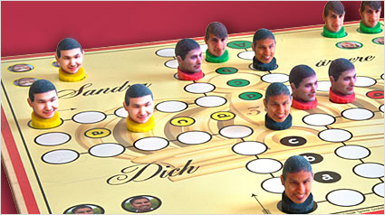

Absatz1: Mensch Ärger dich nicht ist ein sehr bekanntes Spiel das fast jeder kennt.
Absatz2: Es gibt 4 Spielfiguren die Blau,Grün,Rot und Gelb sind.
Absatz1: Die Spielregeln sind eigentlich ganz einfach.
Absatz2: Jeder Spieler darf 3mal würfeln. Wer eine Sechs hat, darf die erste Figur auf das Startfeld stellen. Danach kann man noch ein Mal würfeln um die gewürfelte Zahl vorrücken. Jene Spieler, die bei der ersten Runde keine Sechs haben müssen dann wieder 3mal würfeln, bis sie die erwünschte Zahl würfeln.
Wenn man alle 4 Figuren der jeweiligen Farbe im Ziel sind dann hat die Person gewonnen.
